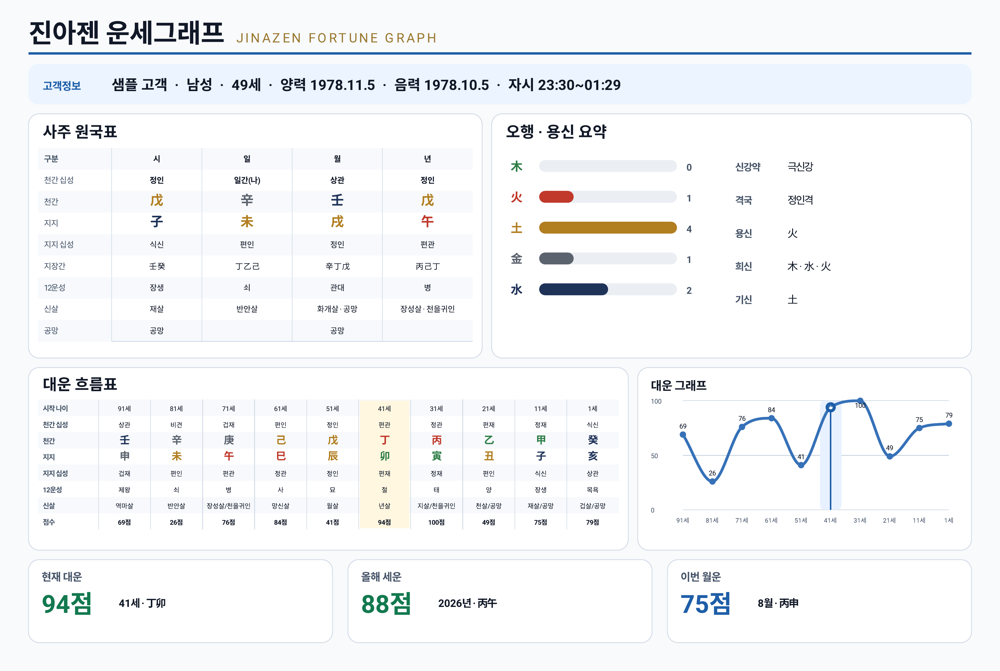

JINAZEN
JINAZEN個人向け 運勢グラフ
生年月日ひとつで四柱の命盤・紫微斗数・タロット運命数を見て、自分だけの運勢グラフで人生の流れを読んでみてください。
本サービスは韓国語です · Kakao アカウントが必要です

日々の悩みを抱えたままでは、すぐに瞑想に入るのは難しいものです。
運勢を見る目的は、人生の栄枯盛衰を天気予報のように受け止め、
執着や比較を手放し、自然の流れに気づくことにあります。
人間は陰陽五行の原理を宿した小さな宇宙です。
ジナゼン（JINAZEN）はその宇宙の設計図を読み解き、
人生の調和とバランスを支えることを目指しています。
人生の流れを先に知ることで、心は落ち着きやすくなります。
自分だけの時間を見つけ、瞑想を通して本当の自分に向き合うとき、
人生を一つの美しい芸術として新たに形づくっていけるかもしれません。
ジナゼンの哲学を体で体験する場所
東海に昇る太陽、雪岳山、永郎湖。束草・永郎海辺の自然の気の中に、ジナゼンの空間があります。
ここでは、誰もあなたの運命を代わりに読んではくれません。キオスクに生年月日を入れると 運勢グラフが紙で出てきて、その流れを自分で読みます。
開運法にしたがって自分に合うグッズと漢方茶を選び、黄金のくちばしに触れて願いをかけ、 瞑想空間で心を静めます。
瞑想の中に芸術を見つける場所。自分で自分を見つける空間です。


2026年10月初めにオープンします
生年月日ひとつで四柱の命盤・紫微斗数・タロット運命数を見て、自分だけの運勢グラフで人生の流れを読んでみてください。
本サービスは韓国語です · Kakao アカウントが必要です


一度お支払いいただくと、何度でもご覧いただけます。定期購読ではありません。
瞑想アーティストがつくった
四柱推命の相談、紫微斗数の相談、タロットの相談をひとつのプログラムで扱いたい占術家と相談師のためにつくりました。
専門家のための運勢相談ソリューション
ダウンロードは無料です。アプリ内で一度購入すれば、そのまま使い続けられます。サブスクリプションではありません。
アプリ画面は現在韓国語です。日本語UIは準備中です。

四柱推命を八文字で終わらせず、
運勢グラフまでつなげます。
北極星（紫微星）を中心に十二宮へ星を配し、
人生の領域ごとの気を見ます。
生年月日から導く運命数で三枚のカードを引き、
内と外と今年の流れを見ます。
万年暦を別に開き、紫微斗数を別に見て、タロットをまた別に引いていた作業を、ひとつの画面で終えます。
四柱推命・紫微斗数・タロット運命数を行き来する統合ソリューションです。

八文字を立て、流れを描くのはアプリの仕事です。
それがこの人にとって何を意味するのかは、先生が語ります。


瞑想アーティスト
瞑想へ向かう旅
大人のための童話を書き、
IT融合技術で発明を、
人生を運勢グラフとして可視化し、
心を整える瞑想茶とともに、その先に瞑想を置きます。
黄金のくちばしは、くちばしに触れると願いが叶う、韓国伝統の太陽の鳥を象徴して生まれた幸運のキャラクターです。童話の想像の中から、現実の暮らしへ訪れてきた温かな友です。
本の形をしたAndroid端末と本棚型ドックを発明して広告プラットフォームを運営し、日韓に法人を設立し、両国に累計10,000台を設置してサービスを提供しました。キヤノン・ロッテ・ゴンチャとのパートナーシップ、充電装置の技術特許を共同発明。
お茶を、心を見つめる小さな儀式ととらえ、四種の瞑想茶を自らブレンドしました。ソウル芸術の殿堂ミュージアムセラピー〈Chill your soul〉瞑想展（2025）、束草・永郎湖の普光寺 龍淵亭の「ひとり瞑想の椅子」と「愛の椅子」を制作。
日 月 星
空を仰いできた民族の精神的原型を、三杯のお茶に込めました。
太陽のお茶、月のお茶、北極星のお茶。
東洋医学の理論に沿って設計した、瞑想のための韓方茶です。


東友茶 · EAST FRIENDS · 技術特許2件 · HACCP
EAST FRIENDSで見る ↗お客様がとどまり、また訪れる体験空間
お客様がキオスクに生年月日を入力すると、運勢グラフが紙で出てきます。
自分の流れを読み、自分に合うお茶とグッズを選び、しばらくとどまります。
ジナゼンは、この体験をそのまま店舗にお届けします。
導入条件は店舗に合わせてご相談いたします
瞑想が芸術になる瞬間。
ジナゼンは、誰もが瞑想を通して自分だけの芸術を見つける場所です。
運勢グラフで人生の流れを読み、お茶と瞑想でその流れにとどまります。